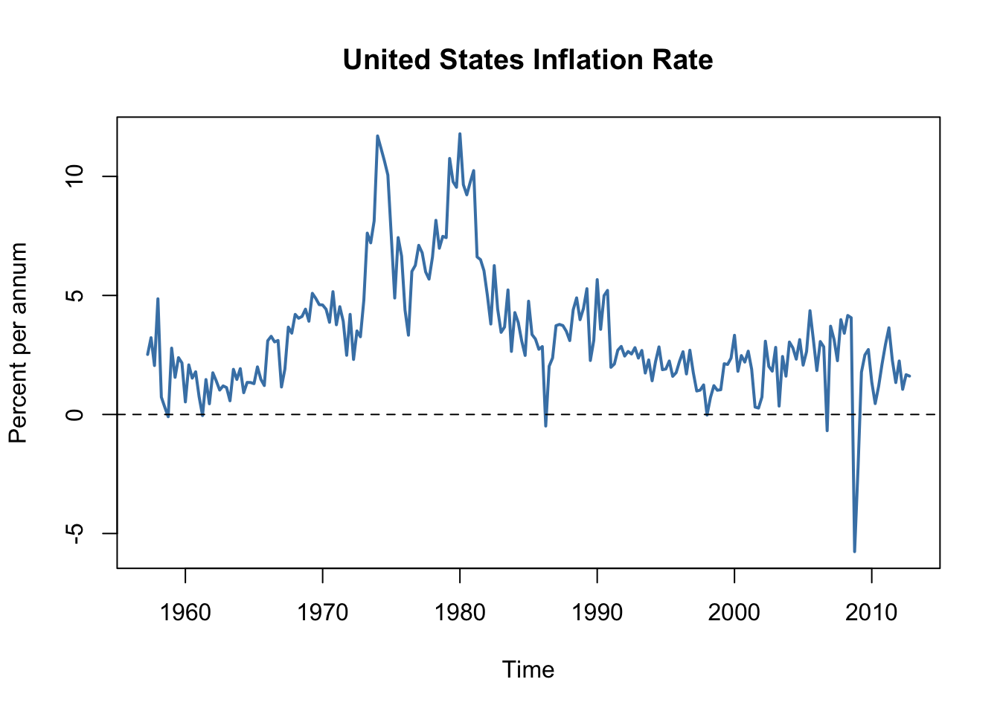

16 Additional Topics in Time Series Regression
This chapter discusses the following advanced topics in time series regression and demonstrates how core techniques can be applied using R:
- Vector autoregressions (VARs). We focus on using VARs for forecasting. Another branch of the literature is concerned with so-called Structural VARs which are, however, beyond the scope of this chapter.
- Multiperiod forecasts. This includes a discussion of iterated and direct (multivariate) forecasts.
- The DF-GLS test, a modification of the ADF test that has more power than the latter when the series has deterministic components and is close to being nonstationarity.
- Cointegration analysis with an application to short- and long-term interest rates. We demonstrate how to estimate a vector error correction model.
- Autoregressive conditional heteroskedasticity (ARCH) models. We show how a simple generalized ARCH (GARCH) model can be helpful in quantifying the risk associated with investing in the stock market in terms of estimation and forecasting of the volatility of asset returns.
To reproduce the code examples, install the R packages listed below and make sure that the subsequent code chunk executes without any errors.
- AER (Christian Kleiber and Zeileis 2008),
- dynlm (Zeileis 2019),
- fGarch (Wuertz et al. 2024),
- quantmod (Ryan and Ulrich 2023),
- readxl (Wickham and Bryan 2023),
- scales (Wickham, Pedersen, and Seidel 2023),
- vars (Bernhard Pfaff 2023).
library(AER)
library(readxl)
library(dynlm)
library(vars)
library(quantmod)
library(scales)
library(fGarch)16.1 Vector Autoregressions
A Vector autoregressive (VAR) model is useful when one is interested in predicting multiple time series variables using a single model. At its core, the VAR model is an extension of the univariate autoregressive model we have dealt with in Chapters 14 and 15. Key Concept 16.1 summarizes the essentials of VAR.
Key Concept
16.1
Vector Autoregressions
The vector autoregression (VAR) model extends the idea of univariate autoregression to \(k\) time series regressions, where the lagged values of all \(k\) series appear as regressors. Put differently, in a VAR model we regress a vector of time series variables on lagged vectors of these variables. As for AR(\(p\)) models, the lag order is denoted by \(p\) so the VAR(\(p\)) model of two variables \(X_t\) and \(Y_t\) (\(k=2\)) is given by the equations
\[\begin{align*} Y_t =& \, \beta_{10} + \beta_{11} Y_{t-1} + \dots + \beta_{1p} Y_{t-p} + \gamma_{11} X_{t-1} + \dots + \gamma_{1p} X_{t-p} + u_{1t}, \\ X_t =& \, \beta_{20} + \beta_{21} Y_{t-1} + \dots + \beta_{2p} Y_{t-p} + \gamma_{21} X_{t-1} + \dots + \gamma_{2p} X_{t-p} + u_{2t}. \end{align*}\]
The \(\beta\)s and \(\gamma\)s can be estimated using OLS on each equation. The assumptions for VARs are the time series assumptions presented in Key Concept 14.6 applied to each of the equations.
It is straightforward to estimate VAR models in R. A feasible approach is to simply use lm() for estimation of the individual equations. Furthermore, the Rpackage vars provides standard tools for estimation, diagnostic testing and prediction using this type of models.
When the assumptions of Key Concept 16.1 hold, the OLS estimators of the VAR coefficients are consistent and jointly normal in large samples so that the usual inferential methods such as confidence intervals and \(t\)-statistics can be used.
The structure of VARs also allows to jointly test restrictions across multiple equations. For instance, it may be of interest to test whether the coefficients on all regressors of the lag \(p\) are zero. This corresponds to testing the null that the lag order \(p-1\) is correct. Large sample joint normality of the coefficient estimates is convenient because it implies that we may simply use an \(F\)-test for this testing problem. The explicit formula for such a test statistic is rather complicated but fortunately such computations are easily done using the R functions we work with in this chapter. Another way to determine optimal lag lengths are information criteria like the \(BIC\) which we have introduced for univariate time series regressions in Chapter 14.6. Just as in the case of a single equation, for a multiple equation model we choose the specification which has the smallest \(BIC(p)\), where \[\begin{align*} BIC(p) =& \, \log\left[\text{det}(\widehat{\Sigma}_u)\right] + k(kp+1) \frac{\log(T)}{T}, \end{align*}\] with \(\widehat{\Sigma}_u\) denoting the estimate of the \(k \times k\) covariance matrix of the VAR errors and \(\text{det}(\cdot)\) denotes the determinant.
As for univariate distributed lag models, one should think carefully about variables to include in a VAR, as adding unrelated variables reduces the forecast accuracy by increasing the estimation error. This is particularly important because the number of parameters to be estimated grows qudratically to the number of variables modeled by the VAR. In the application below we shall see that economic theory and empirical evidence are helpful for this decision.
A VAR Model of the Growth Rate of GDP and the Term Spread
We now show how to estimate a VAR model of the GDP growth rate, \(GDPGR\), and the term spread, \(TSpread\). As following the discussion on nonstationarity of GDP growth in Chapter 14.7 (recall the possible break in the early 1980s detected by the \(QLR\) test statistic), we use data from 1981:Q1 to 2012:Q4. The two model equations are:
\[\begin{align*} GDPGR_t =& \, \beta_{10} + \beta_{11} GDPGR_{t-1} + \beta_{12} GDPGR_{t-2} + \gamma_{11} TSpread_{t-1} + \gamma_{12} TSpread_{t-2} + u_{1t}, \\ TSpread_t =& \, \beta_{20} + \beta_{21} GDPGR_{t-1} + \beta_{22} GDPGR_{t-2} + \gamma_{21} TSpread_{t-1} + \gamma_{22} TSpread_{t-2} + u_{2t}. \end{align*}\]
The data set us_macro_quarterly.xlsx is provided on the companion website to Stock and Watson (2015) and can be downloaded here. It contains quarterly data on U.S. real (i.e., inflation adjusted) GDP from 1957 to 2004. We begin by importing the data set and do some formatting (we already worked with this data set in Chapter 14 so you may skip these steps if you have already loaded the data in your working environment).
# load the U.S. macroeconomic data set
USMacroSWQ <- read_xlsx("Data/us_macro_quarterly.xlsx",
sheet = 1,
col_types = c("text", rep("numeric", 9)))
# Change the name of the first column
colnames(USMacroSWQ)[1] <- "Date"
# format the date column
USMacroSWQ$Date <- as.yearqtr(USMacroSWQ$Date, format = "%Y:0%q")
# define GDP as ts object
GDP <- ts(USMacroSWQ$GDPC96,
start = c(1957, 1),
end = c(2013, 4),
frequency = 4)
# define GDP growth as a ts object
GDPGrowth <- ts(400*log(GDP[-1]/GDP[-length(GDP)]),
start = c(1957, 2),
end = c(2013, 4),
frequency = 4)
# 3-months Treasury bill interest rate as a 'ts' object
TB3MS <- ts(USMacroSWQ$TB3MS,
start = c(1957, 1),
end = c(2013, 4),
frequency = 4)
# 10-years Treasury bonds interest rate as a 'ts' object
TB10YS <- ts(USMacroSWQ$GS10,
start = c(1957, 1),
end = c(2013, 4),
frequency = 4)
# generate the term spread series
TSpread <- TB10YS - TB3MSWe estimate both equations separately by OLS and use coeftest() to obtain robust standard errors.
# Estimate both equations using 'dynlm()'
VAR_EQ1 <- dynlm(GDPGrowth ~ L(GDPGrowth, 1:2) + L(TSpread, 1:2),
start = c(1981, 1),
end = c(2012, 4))
VAR_EQ2 <- dynlm(TSpread ~ L(GDPGrowth, 1:2) + L(TSpread, 1:2),
start = c(1981, 1),
end = c(2012, 4))
# rename regressors for better readability
names(VAR_EQ1$coefficients) <- c("Intercept","Growth_t-1",
"Growth_t-2", "TSpread_t-1", "TSpread_t-2")
names(VAR_EQ2$coefficients) <- names(VAR_EQ1$coefficients)
# robust coefficient summaries
coeftest(VAR_EQ1, vcov. = sandwich)
#>
#> t test of coefficients:
#>
#> Estimate Std. Error t value Pr(>|t|)
#> Intercept 0.516344 0.524429 0.9846 0.3267616
#> Growth_t-1 0.289553 0.110827 2.6127 0.0101038 *
#> Growth_t-2 0.216392 0.085879 2.5197 0.0130255 *
#> TSpread_t-1 -0.902549 0.358290 -2.5190 0.0130498 *
#> TSpread_t-2 1.329831 0.392660 3.3867 0.0009503 ***
#> ---
#> Signif. codes: 0 '***' 0.001 '**' 0.01 '*' 0.05 '.' 0.1 ' ' 1
coeftest(VAR_EQ2, vcov. = sandwich)
#>
#> t test of coefficients:
#>
#> Estimate Std. Error t value Pr(>|t|)
#> Intercept 0.4557740 0.1214227 3.7536 0.0002674 ***
#> Growth_t-1 0.0099785 0.0218424 0.4568 0.6485920
#> Growth_t-2 -0.0572451 0.0264099 -2.1676 0.0321186 *
#> TSpread_t-1 1.0582279 0.0983750 10.7571 < 2.2e-16 ***
#> TSpread_t-2 -0.2191902 0.1086198 -2.0180 0.0457712 *
#> ---
#> Signif. codes: 0 '***' 0.001 '**' 0.01 '*' 0.05 '.' 0.1 ' ' 1We end up with the following results:
\[\begin{align*} GDPGR_t =& \, \underset{(0.46)}{0.52} + \underset{(0.11)}{0.29} GDPGR_{t-1} + \underset{(0.09)}{0.22} GDPGR_{t-2} -\underset{(0.36)}{0.90} TSpread_{t-1} + \underset{(0.39)}{1.33} TSpread_{t-2}, \\ TSpread_t =& \, \underset{(0.12)}{0.46} + \underset{(0.02)}{0.01} GDPGR_{t-1} -\underset{(0.03)}{0.06} GDPGR_{t-2} + \underset{(0.10)}{1.06} TSpread_{t-1} -\underset{(0.11)}{0.22} TSpread_{t-2}. \end{align*}\]
The function VAR() can be used to obtain the same coefficient estimates as presented above since it applies OLS per equation, too.
# set up data for estimation using `VAR()`
VAR_data <- window(ts.union(GDPGrowth, TSpread), start = c(1980, 3), end = c(2012, 4))
# estimate model coefficients using `VAR()`
VAR_est <- VAR(y = VAR_data, p = 2)
VAR_est
#>
#> VAR Estimation Results:
#> =======================
#>
#> Estimated coefficients for equation GDPGrowth:
#> ==============================================
#> Call:
#> GDPGrowth = GDPGrowth.l1 + TSpread.l1 + GDPGrowth.l2 + TSpread.l2 + const
#>
#> GDPGrowth.l1 TSpread.l1 GDPGrowth.l2 TSpread.l2 const
#> 0.2895533 -0.9025493 0.2163919 1.3298305 0.5163440
#>
#>
#> Estimated coefficients for equation TSpread:
#> ============================================
#> Call:
#> TSpread = GDPGrowth.l1 + TSpread.l1 + GDPGrowth.l2 + TSpread.l2 + const
#>
#> GDPGrowth.l1 TSpread.l1 GDPGrowth.l2 TSpread.l2 const
#> 0.009978489 1.058227945 -0.057245123 -0.219190243 0.455773969VAR() returns a list of lm objects which can be passed to the usual functions, for example summary() and so it is straightforward to obtain model statistics for the individual equations.
# obtain the adj. R^2 from the output of 'VAR()'
summary(VAR_est$varresult$GDPGrowth)$adj.r.squared
#> [1] 0.2887223
summary(VAR_est$varresult$TSpread)$adj.r.squared
#> [1] 0.8254311We may use the individual model objects to conduct Granger causality tests.
# Granger causality tests:
# test if term spread has no power in explaining GDP growth
linearHypothesis(VAR_EQ1,
hypothesis.matrix = c("TSpread_t-1", "TSpread_t-2"),
vcov. = sandwich)
#> Linear hypothesis test
#>
#> Hypothesis:
#> TSpread_t-1
#> TSpread_t-2
#>
#> Model 1: restricted model
#> Model 2: GDPGrowth ~ L(GDPGrowth, 1:2) + L(TSpread, 1:2)
#>
#> Note: Coefficient covariance matrix supplied.
#>
#> Res.Df Df F Pr(>F)
#> 1 125
#> 2 123 2 5.9094 0.003544 **
#> ---
#> Signif. codes: 0 '***' 0.001 '**' 0.01 '*' 0.05 '.' 0.1 ' ' 1
# test if GDP growth has no power in explaining term spread
linearHypothesis(VAR_EQ2,
hypothesis.matrix = c("Growth_t-1", "Growth_t-2"),
vcov. = sandwich)
#> Linear hypothesis test
#>
#> Hypothesis:
#> Growth_t-1
#> Growth_t-2
#>
#> Model 1: restricted model
#> Model 2: TSpread ~ L(GDPGrowth, 1:2) + L(TSpread, 1:2)
#>
#> Note: Coefficient covariance matrix supplied.
#>
#> Res.Df Df F Pr(>F)
#> 1 125
#> 2 123 2 3.4777 0.03395 *
#> ---
#> Signif. codes: 0 '***' 0.001 '**' 0.01 '*' 0.05 '.' 0.1 ' ' 1Both Granger causality tests reject at the level of \(5\%\). This is evidence in favor of the conjecture that the term spread has power in explaining GDP growth and vice versa.
Iterated Multivariate Forecasts using an Iterated VAR
The idea of an iterated forecast for period \(T+2\) based on observations up to period \(T\) is to use the one-period-ahead forecast as an intermediate step. That is, the forecast for period \(T+1\) is used as an observation when predicting the level of a series for period \(T+2\). This can be generalized to a \(h\)-period-ahead forecast where all intervening periods between \(T\) and \(T+h\) must be forecasted as they are used as observations in the process (see Chapter 16.2 of the book for a more detailed argument on this concept). Iterated multiperiod forecasts are summarized in Key Concept 16.2.
Key Concept
16.2
Iterated Multiperiod Forecasts
The steps for an iterated multiperiod AR forecast are:
Estimate the AR(\(p\)) model using OLS and compute the one-period-ahead forecast.
Use the one-period-ahead forecast to obtain the two-period-ahead forecast.
Continue by iterating to obtain forecasts farther into the future.
An iterated multiperiod VAR forecast is done as follows:
Estimate the VAR(\(p\)) model using OLS per equation and compute the one-period-ahead forecast for all variables in the VAR.
Use the one-period-ahead forecasts to obtain the two-period-ahead forecasts.
Continue by iterating to obtain forecasts of all variables in the VAR farther into the future.
Since a VAR models all variables using lags of the respective other variables, we need to compute forecasts for all variables. It can be cumbersome to do so when the VAR is large but fortunately there are R functions that facilitate this. For example, the function predict() can be used to obtain iterated multivariate forecasts for VAR models estimated by the function VAR().
The following code chunk shows how to compute iterated forecasts for GDP growth and the term spread up to period 2015:Q1, that is \(h=10\), using the model object VAR_est.
# compute iterated forecasts for GDP growth and term spread for the next 10 quarters
forecasts <- predict(VAR_est)
forecasts
#> $GDPGrowth
#> fcst lower upper CI
#> [1,] 1.738653 -3.006124 6.483430 4.744777
#> [2,] 1.692193 -3.312731 6.697118 5.004925
#> [3,] 1.911852 -3.282880 7.106583 5.194731
#> [4,] 2.137070 -3.164247 7.438386 5.301317
#> [5,] 2.329667 -3.041435 7.700769 5.371102
#> [6,] 2.496815 -2.931819 7.925449 5.428634
#> [7,] 2.631849 -2.846390 8.110088 5.478239
#> [8,] 2.734819 -2.785426 8.255064 5.520245
#> [9,] 2.808291 -2.745597 8.362180 5.553889
#> [10,] 2.856169 -2.722905 8.435243 5.579074
#>
#> $TSpread
#> fcst lower upper CI
#> [1,] 1.676746 0.708471226 2.645021 0.9682751
#> [2,] 1.884098 0.471880228 3.296316 1.4122179
#> [3,] 1.999409 0.336348101 3.662470 1.6630609
#> [4,] 2.080836 0.242407507 3.919265 1.8384285
#> [5,] 2.131402 0.175797245 4.087008 1.9556052
#> [6,] 2.156094 0.125220562 4.186968 2.0308738
#> [7,] 2.161783 0.085037834 4.238528 2.0767452
#> [8,] 2.154170 0.051061544 4.257278 2.1031082
#> [9,] 2.138164 0.020749780 4.255578 2.1174139
#> [10,] 2.117733 -0.007139213 4.242605 2.1248722This reveals that the two-quarter-ahead forecast of GDP growth in 2013:Q2 using data through 2012:Q4 is \(1.69\). For the same period, the iterated VAR forecast for the term spread is \(1.88\).
The matrices returned by predict(VAR_est) also include \(95\%\) prediction intervals (however, the function does not adjust for autocorrelation or heteroskedasticity of the errors!).
We may also plot the iterated forecasts for both variables by calling plot() on the output of predict(VAR_est).

Direct Multiperiod Forecasts
A direct multiperiod forecast uses a model where the predictors are lagged appropriately such that the available observations can be used directly to do the forecast. The idea of direct multiperiod forecasting is summarized in Key Concept 16.3.
Key Concept
16.3
Direct Multiperiod Forecasts
A direct multiperiod forecast that forecasts \(h\) periods into the future using a model of \(Y_t\) and an additional predictor \(X_t\) with \(p\) lags is done by first estimating
\[\begin{align*} Y_t =& \, \delta_0 + \delta_1 Y_{t-h} + \dots + \delta_{p} Y_{t-p-h+1} + \delta_{p+1} X_{t-h} \\ +& \dots + \delta_{2p} Y_{t-p-h+1} + u_t, \end{align*}\]
which is then used to compute the forecast of \(Y_{T+h}\) based on observations through period \(T\).For example, to obtain two-quarter-ahead forecasts of GDP growth and the term spread we first estimate the equations
\[\begin{align*} GDPGR_t =& \, \beta_{10} + \beta_{11} GDPGR_{t-2} + \beta_{12} GDPGR_{t-3} + \gamma_{11} TSpread_{t-2} + \gamma_{12} TSpread_{t-3} + u_{1t}, \\ TSpread_t =& \, \beta_{20} + \beta_{21} GDPGR_{t-2} + \beta_{22} GDPGR_{t-3} + \gamma_{21} TSpread_{t-2} + \gamma_{22} TSpread_{t-3} + u_{2t} \end{align*}\]
and then substitute the values of \(GDPGR_{2012:Q4}\), \(GDPGR_{2012:Q3}\), \(TSpread_{2012:Q4}\) and \(TSpread_{2012:Q3}\) into both equations. This is easily done manually.
# estimate models for direct two-quarter-ahead forecasts
VAR_EQ1_direct <- dynlm(GDPGrowth ~ L(GDPGrowth, 2:3) + L(TSpread, 2:3),
start = c(1981, 1), end = c(2012, 4))
VAR_EQ2_direct <- dynlm(TSpread ~ L(GDPGrowth, 2:3) + L(TSpread, 2:3),
start = c(1981, 1), end = c(2012, 4))
# compute direct two-quarter-ahead forecasts
coef(VAR_EQ1_direct) %*% c(1, # intercept
window(GDPGrowth, start = c(2012, 3), end = c(2012, 4)),
window(TSpread, start = c(2012, 3), end = c(2012, 4)))
#> [,1]
#> [1,] 2.439497
coef(VAR_EQ2_direct) %*% c(1, # intercept
window(GDPGrowth, start = c(2012, 3), end = c(2012, 4)),
window(TSpread, start = c(2012, 3), end = c(2012, 4)))
#> [,1]
#> [1,] 1.66578Applied economists often use the iterated method since this forecasts are more reliable in terms of \(MSFE\), provided that the one-period-ahead model is correctly specified. If this is not the case, for example because one equation in a VAR is believed to be misspecified, it can be beneficial to use direct forecasts since the iterated method will then be biased and thus have a higher \(MSFE\) than the direct method. See Chapter 16.2 for a more detailed discussion on advantages and disadvantages of both methods.
16.2 Orders of Integration and the DF-GLS Unit Root Test
Some economic time series have smoother trends than variables that can be described by random walk models. A way to model these time series is \[\Delta Y_t = \beta_0 + \Delta Y_{t-1} + u_t,\] where \(u_t\) is a serially uncorrelated error term. This model states that the first difference of a series is a random walk. Consequently, the series of second differences of \(Y_t\) is stationary. Key Concept 16.4 summarizes the notation.
Key Concept
16.4
Orders of Integration, Differencing and Stationarity
When a time series \(Y_t\) has a unit autoregressive root, \(Y_t\) is integrated of order one. This is often denoted by \(Y_t \sim I(1)\). We simply say that \(Y_t\) is \(I(1)\). If \(Y_t\) is \(I(1)\), its first difference \(\Delta Y_t\) is stationary.
\(Y_t\) is \(I(2)\) when \(Y_t\) needs to be differenced twice in order to obtain a stationary series. Using the notation introduced here, if \(Y_t\) is \(I(2)\), its first difference \(\Delta Y_t\) is \(I(1)\) and its second difference \(\Delta^2 Y_t\) is stationary. \(Y_t\) is \(I(d)\) when \(Y_t\) must be differenced \(d\) times to obtain a stationary series.
When \(Y_t\) is stationary, it is integrated of order \(0\) so \(Y_t\) is \(I(0)\).
It is fairly easy to obtain differences of time series in R. For example, the function diff() returns suitably lagged and iterated differences of numeric vectors, matrices and time series objects of the class ts.
Following the book, we take the price level of the U.S. measured by the Personal Consumption Expenditures Price Index as an example.
# define ts object of the U.S. PCE Price Index
PCECTPI <- ts(log(USMacroSWQ$PCECTPI),
start = c(1957, 1),
end = c(2012, 4),
freq = 4)
# plot logarithm of the PCE Price Index
plot(PCECTPI,
main = "Log of United States PCE Price Index",
ylab = "Logarithm",
col = "steelblue",
lwd = 2)
The logarithm of the price level has a smoothly varying trend. This is typical for an \(I(2)\) series. If the price level is indeed \(I(2)\), the first differences of this series should be \(I(1)\). Since we are considering the logarithm of the price level, we obtain growth rates by taking first differences. Therefore, the differenced price level series is the series of quarterly inflation rates. This is quickly done in R using the function diff() from the package base. As explained in Chapter 14.2, multiplying the quarterly inflation rates by \(400\) yields the quarterly rate of inflation, measured in percentage points at an annual rate.
# plot U.S. Inflation Rate
plot(400 * diff(PCECTPI),
main = "United States Inflation Rate",
ylab = "Percent per annum",
col = "steelblue",
lwd = 2)
# add a dashed line at y = 0
abline(0, 0, lty = 2)
The inflation rate behaves much more erratically than the smooth graph of the logarithm of the PCE price index.
The DF-GLS Test for a Unit Root
The DF-GLS test for a unit root has been developed by Elliott, Rothenberg, and Stock (1996) and has higher power than the ADF test when the autoregressive root is large but less than one. That is, the DF-GLS has a higher probability of rejecting the false null of a stochastic trend when the sample data stems from a time series that is close to being integrated.
The idea of the DF-GLS test is to test for an autoregressive unit root in the detrended series, whereby GLS estimates of the deterministic components are used to obtain the detrended version of the original series. See Chapter 16.3 of the book for a more detailed explanation of the approach.
A function that performs the DF-GLS test is implemented in the package urca (this package is a dependency of the package vars so it should be already loaded if vars is attached). The function that computes the test statistic is ur.ers.
# DF-GLS test for unit root in GDP
summary(ur.ers(log(window(GDP, start = c(1962, 1), end = c(2012, 4))),
model = "trend",
lag.max = 2))
#>
#> ###############################################
#> # Elliot, Rothenberg and Stock Unit Root Test #
#> ###############################################
#>
#> Test of type DF-GLS
#> detrending of series with intercept and trend
#>
#>
#> Call:
#> lm(formula = dfgls.form, data = data.dfgls)
#>
#> Residuals:
#> Min 1Q Median 3Q Max
#> -0.025739 -0.004054 0.000017 0.004619 0.033620
#>
#> Coefficients:
#> Estimate Std. Error t value Pr(>|t|)
#> yd.lag -0.01213 0.01012 -1.199 0.23207
#> yd.diff.lag1 0.28583 0.07002 4.082 6.47e-05 ***
#> yd.diff.lag2 0.19320 0.07058 2.737 0.00676 **
#> ---
#> Signif. codes: 0 '***' 0.001 '**' 0.01 '*' 0.05 '.' 0.1 ' ' 1
#>
#> Residual standard error: 0.007807 on 198 degrees of freedom
#> Multiple R-squared: 0.1504, Adjusted R-squared: 0.1376
#> F-statistic: 11.69 on 3 and 198 DF, p-value: 4.392e-07
#>
#>
#> Value of test-statistic is: -1.1987
#>
#> Critical values of DF-GLS are:
#> 1pct 5pct 10pct
#> critical values -3.48 -2.89 -2.57The summary of the test shows that the test statistic is about \(-1.2\). The \(10\%\) critical value for the DF-GLS test is \(-2.57\). This is, however, not the appropriate critical value for the ADF test when an intercept and a time trend are included in the Dickey-Fuller regression: the asymptotic distributions of both test statistics differ and so do their critical values!
The test is left-sided so we cannot reject the null hypothesis that U.S. inflation is nonstationary, using the DF-GLS test.
16.3 Cointegration
Key Concept
16.5
Cointegration
When \(X_t\) and \(Y_t\) are \(I(1)\) and if there is a \(\theta\) such that \(Y_t - \theta X_t\) is \(I(0)\), \(X_t\) and \(Y_t\) are cointegrated. Put differently, cointegration of \(X_t\) and \(Y_t\) means that \(X_t\) and \(Y_t\) have the same or a common stochastic trend and that this trend can be eliminated by taking a specific difference of the series such that the resulting series is stationary.
R functions for cointegration analysis are implemented in the package urca.
As an example, reconsider the relation between short-term and long-term interest rates in the example of U.S. 3-month treasury bills, U.S. 10-years treasury bonds and the spread in their interest rates which have been introduced in Chapter 14.4. The next code chunk shows how to reproduce Figure 16.2 of the book.
# reproduce Figure 16.2 of the book
# plot both interest series
plot(merge(as.zoo(TB3MS), as.zoo(TB10YS)),
plot.type = "single",
lty = c(2, 1),
lwd = 2,
xlab = "Date",
ylab = "Percent per annum",
ylim = c(-5, 17),
main = "Interest Rates")
# add the term spread series
lines(as.zoo(TSpread),
col = "steelblue",
lwd = 2,
xlab = "Date",
ylab = "Percent per annum",
main = "Term Spread")
# shade the term spread
polygon(c(time(TB3MS), rev(time(TB3MS))),
c(TB10YS, rev(TB3MS)),
col = alpha("steelblue", alpha = 0.3),
border = NA)
# add horizontal line at 0
abline(0, 0)
# add a legend
legend("topright",
legend = c("TB3MS", "TB10YS", "Term Spread"),
col = c("black", "black", "steelblue"),
lwd = c(2, 2, 2),
lty = c(2, 1, 1))
The plot suggests that long-term and short-term interest rates are cointegrated: both interest series seem to have the same long-run behavior. They share a common stochastic trend. The term spread, which is obtained by taking the difference between long-term and short-term interest rates, seems to be stationary. In fact, the expectations theory of the term structure suggests the cointegrating coefficient \(\theta\) to be 1. This is consistent with the visual result.
Testing for Cointegration
Following Key Concept 16.5, it seems natural to construct a test for cointegration of two series in the following manner: if two series \(X_t\) and \(Y_t\) are cointegrated, the series obtained by taking the difference \(Y_t - \theta X_t\) must be stationary. If the series are not cointegrated, \(Y_t - \theta X_t\) is nonstationary. This is an assumption that can be tested using a unit root test. We have to distinguish between two cases:
\(\theta\) is known.
Knowledge of \(\theta\) enables us to compute differences \(z_t = Y_t - \theta X_t\) so that Dickey-Fuller and DF-GLS unit root tests can be applied to \(z_t\). For these tests, the critical values are the critical values of the ADF or DF-GLS test.
\(\theta\) is unknown.
If \(\theta\) is unknown, it must be estimated before the unit root test can be applied. This is done by estimating the regression \[Y_t = \alpha + \theta X_t + z_t\] using OLS (this is refered to as the first-stage regression). Then, a Dickey-Fuller test is used for testing the hypothesis that \(z_t\) is a nonstationary series. This is known as the Engle-Granger Augmented Dickey-Fuller test for cointegration (or EG-ADF test) after Engle and Granger (1987). The critical values for this test are special as the associated null distribution is nonnormal and depends on the number of \(I(1)\) variables used as regressors in the first stage regression. You may look them up in Table 16.2 of the book. When there are only two presumably cointegrated variables (and thus a single \(I(1)\) variable is used in the first stage OLS regression) the critical values for the levels \(10\%\), \(5\%\) and \(1\%\) are \(-3.12\), \(-3.41\) and \(-3.96\).
Application to Interest Rates
As has been mentioned above, the theory of the term structure suggests that long-term and short-term interest rates are cointegrated with a cointegration coefficient of \(\theta = 1\). In the previous section we have seen that there is visual evidence for this conjecture since the spread of 10-year and 3-month interest rates looks stationary.
We continue by using formal tests (the ADF and the DF-GLS test) to see whether the individual interest rate series are integrated and if their difference is stationary (for now, we assume that \(\theta = 1\) is known). Both is conveniently done by using the functions ur.df() for computation of the ADF test and ur.ers for conducting the DF-GLS test. Following the book we use data from 1962:Q1 to 2012:Q4 and employ models that include a drift term. We set the maximum lag order to \(6\) and use the \(AIC\) for selection of the optimal lag length.
# test for nonstationarity of 3-month treasury bills using ADF test
ur.df(window(TB3MS, c(1962, 1), c(2012, 4)),
lags = 6,
selectlags = "AIC",
type = "drift")
#>
#> ###############################################################
#> # Augmented Dickey-Fuller Test Unit Root / Cointegration Test #
#> ###############################################################
#>
#> The value of the test statistic is: -2.1004 2.2385
# test for nonstationarity of 10-years treasury bonds using ADF test
ur.df(window(TB10YS, c(1962, 1), c(2012, 4)),
lags = 6,
selectlags = "AIC",
type = "drift")
#>
#> ###############################################################
#> # Augmented Dickey-Fuller Test Unit Root / Cointegration Test #
#> ###############################################################
#>
#> The value of the test statistic is: -1.0079 0.5501
# test for nonstationarity of 3-month treasury bills using DF-GLS test
ur.ers(window(TB3MS, c(1962, 1), c(2012, 4)),
model = "constant",
lag.max = 6)
#>
#> ###############################################################
#> # Elliot, Rothenberg and Stock Unit Root / Cointegration Test #
#> ###############################################################
#>
#> The value of the test statistic is: -1.8042
# test for nonstationarity of 10-years treasury bonds using DF-GLS test
ur.ers(window(TB10YS, c(1962, 1), c(2012, 4)),
model = "constant",
lag.max = 6)
#>
#> ###############################################################
#> # Elliot, Rothenberg and Stock Unit Root / Cointegration Test #
#> ###############################################################
#>
#> The value of the test statistic is: -0.942The corresponding \(10\%\) critical value for both tests is \(-2.57\) so we cannot reject the null hypotheses of nonstationary for either series, even at the \(10\%\) level of significance.12 We conclude that it is plausible to model both interest rate series as \(I(1)\).
Next, we apply the ADF and the DF-GLS test to test for nonstationarity of the term spread series, which means we test for non-cointegration of long- and short-term interest rates.
# test if term spread is stationary (cointegration of interest rates) using ADF
ur.df(window(TB10YS, c(1962, 1), c(2012, 4)) - window(TB3MS, c(1962, 1), c(2012 ,4)),
lags = 6,
selectlags = "AIC",
type = "drift")
#>
#> ###############################################################
#> # Augmented Dickey-Fuller Test Unit Root / Cointegration Test #
#> ###############################################################
#>
#> The value of the test statistic is: -3.9308 7.7362
# test if term spread is stationary (cointegration of interest rates) using DF-GLS
ur.ers(window(TB10YS, c(1962, 1), c(2012, 4)) - window(TB3MS, c(1962, 1),c(2012, 4)),
model = "constant",
lag.max = 6)
#>
#> ###############################################################
#> # Elliot, Rothenberg and Stock Unit Root / Cointegration Test #
#> ###############################################################
#>
#> The value of the test statistic is: -3.8576Table 16.1 summarizes the results.
| Series | ADF Test Statistic | DF-GLS Test Statistic |
|---|---|---|
| TB3MS | \(-2.10\) | \(-1.80\) |
| TB10YS | \(-1.01\) | \(-0.94\) |
| TB10YS - TB3MS | \(-3.93\) | \(-3.86\) |
Both tests reject the hypothesis of nonstationarity of the term spread series at the \(1\%\) level of significance, which is strong evidence in favor of the hypothesis that the term spread is stationary, implying cointegration of long- and short-term interest rates.
Since theory suggests that \(\theta=1\), there is no need to estimate \(\theta\) so it is not necessary to use the EG-ADF test which allows \(\theta\) to be unknown. However, since it is instructive to do so, we follow the book and compute this test statistic. The first-stage OLS regression is \[TB10YS_t = \beta_0 + \beta_1 TB3MS_t + z_t.\]
# estimate first-stage regression of EG-ADF test
FS_EGADF <- dynlm(window(TB10YS, c(1962, 1), c(2012, 4)) ~ window(TB3MS, c(1962, 1),
c(2012, 4)))
FS_EGADF
#>
#> Time series regression with "ts" data:
#> Start = 1962(1), End = 2012(4)
#>
#> Call:
#> dynlm(formula = window(TB10YS, c(1962, 1), c(2012, 4)) ~ window(TB3MS,
#> c(1962, 1), c(2012, 4)))
#>
#> Coefficients:
#> (Intercept) window(TB3MS, c(1962, 1), c(2012, 4))
#> 2.4642 0.8147Thus we have \[\begin{align*} \widehat{TB10YS}_t = 2.46 + 0.81 \cdot TB3MS_t, \end{align*}\] where \(\widehat{\theta} = 0.81\). Next, we take the residual series \(\{\widehat{z_t}\}\) and compute the ADF test statistic.
# compute the residuals
z_hat <- resid(FS_EGADF)
# compute the ADF test statistic
ur.df(z_hat, lags = 6, type = "none", selectlags = "AIC")
#>
#> ###############################################################
#> # Augmented Dickey-Fuller Test Unit Root / Cointegration Test #
#> ###############################################################
#>
#> The value of the test statistic is: -3.1935The test statistic is \(-3.19\) which is smaller than the \(10\%\) critical value but larger than the \(5\%\) critical value (see Table 16.2 of the book). Thus, the null hypothesis of no cointegration can be rejected at the \(10\%\) level but not at the \(5\%\) level. This indicates lower power of the EG-ADF test due to the estimation of \(\theta\): when \(\theta=1\) is the correct value, we expect the power of the ADF test for a unit root in the residuals series \(\widehat{z} = TB10YS - TB3MS\) to be higher than when some estimate \(\widehat{\theta}\) is used.
A Vector Error Correction Model for \(TB10YS_t\) and \(TB3MS\)
If two \(I(1)\) time series \(X_t\) and \(Y_t\) are cointegrated, their differences are stationary and can be modeled in a VAR which is augmented by the regressor \(Y_{t-1} - \theta X_{t-1}\). This is called a vector error correction model (VECM) and \(Y_{t} - \theta X_{t}\) is called the error correction term. Lagged values of the error correction term are useful for predicting \(\Delta X_t\) and/or \(\Delta Y_t\).
A VECM can be used to model the two interest rates considered in the previous sections. Following the book we specify the VECM to include two lags of both series as regressors and choose \(\theta = 1\), as theory suggests (see above).
TB10YS <- window(TB10YS, c(1962, 1), c(2012 ,4))
TB3MS <- window(TB3MS, c(1962, 1), c(2012, 4))
# set up error correction term
VECM_ECT <- TB10YS - TB3MS
# estimate both equations of the VECM using 'dynlm()'
VECM_EQ1 <- dynlm(d(TB10YS) ~ L(d(TB3MS), 1:2) + L(d(TB10YS), 1:2) + L(VECM_ECT))
VECM_EQ2 <- dynlm(d(TB3MS) ~ L(d(TB3MS), 1:2) + L(d(TB10YS), 1:2) + L(VECM_ECT))
# rename regressors for better readability
names(VECM_EQ1$coefficients) <- c("Intercept", "D_TB3MS_l1", "D_TB3MS_l2",
"D_TB10YS_l1", "D_TB10YS_l2", "ect_l1")
names(VECM_EQ2$coefficients) <- names(VECM_EQ1$coefficients)
# coefficient summaries using HAC standard errors
coeftest(VECM_EQ1, vcov. = NeweyWest(VECM_EQ1, prewhite = F, adjust = T))
#>
#> t test of coefficients:
#>
#> Estimate Std. Error t value Pr(>|t|)
#> Intercept 0.1227089 0.0551419 2.2253 0.027205 *
#> D_TB3MS_l1 -0.0016601 0.0727060 -0.0228 0.981807
#> D_TB3MS_l2 -0.0680845 0.0435059 -1.5649 0.119216
#> D_TB10YS_l1 0.2264878 0.0957071 2.3665 0.018939 *
#> D_TB10YS_l2 -0.0734486 0.0703476 -1.0441 0.297740
#> ect_l1 -0.0878871 0.0285644 -3.0768 0.002393 **
#> ---
#> Signif. codes: 0 '***' 0.001 '**' 0.01 '*' 0.05 '.' 0.1 ' ' 1
coeftest(VECM_EQ2, vcov. = NeweyWest(VECM_EQ2, prewhite = F, adjust = T))
#>
#> t test of coefficients:
#>
#> Estimate Std. Error t value Pr(>|t|)
#> Intercept -0.060746 0.107937 -0.5628 0.57422
#> D_TB3MS_l1 0.240003 0.111611 2.1504 0.03276 *
#> D_TB3MS_l2 -0.155883 0.153845 -1.0132 0.31220
#> D_TB10YS_l1 0.113740 0.125571 0.9058 0.36617
#> D_TB10YS_l2 -0.147519 0.112630 -1.3098 0.19182
#> ect_l1 0.031506 0.050519 0.6236 0.53359
#> ---
#> Signif. codes: 0 '***' 0.001 '**' 0.01 '*' 0.05 '.' 0.1 ' ' 1Thus the two estimated equations of the VECM are \[\begin{align*} \widehat{\Delta TB3MS}_t =& \, -\underset{(0.11)}{0.06} + \underset{(0.11)}{0.24} \Delta TB3MS_{t-1} -\underset{(0.15)}{0.16} \Delta TB3MS_{t-2} \\ &+ \underset{(0.13)}{0.11} \Delta TB10YS_{t-1} -\underset{(0.11)}{0.15} \Delta TB10YS_{t-2} + \underset{(0.05)}{0.03} ECT_{t-1}, and, \\ \widehat{\Delta TB10YS}_t =& \, \underset{(0.06)}{0.12} -\underset{(0.07)}{0.00} \Delta TB3MS_{t-1} -\underset{(0.04)}{0.07} \Delta TB3MS_{t-2} \\ &+ \underset{(0.10)}{0.23} \Delta TB10YS_{t-1} -\underset{(0.07)}{0.07} \Delta TB10YS_{t-2} -\underset{(0.03)}{0.09} ECT_{t-1}. \end{align*}\]
The output produced by coeftest() shows that there is little evidence that lagged values of the differenced interest series are useful for prediction. This finding is more pronounced for the equation of the differenced series of the 3-month treasury bill rate, where the error correction term (the lagged term spread) is not significantly different from zero at any common level of significance. However, for the differenced 10-years treasury bonds rate the error correction term is statistically significant at \(1\%\) with an estimate of \(-0.09\). This can be interpreted as follows: although both interest rates are nonstationary, their conintegrating relationship allows to predict the change in the 10-years treasury bonds rate using the VECM. In particular, the negative estimate of the coefficient on the error correction term indicates that there will be a negative change in the next period’s 10-years treasury bonds rate when the 10-years treasury bonds rate is unusually high relative to the 3-month treasury bill rate in the current period.
16.4 Volatility Clustering and Autoregressive Conditional Heteroskedasticity
Financial time series often exhibit a behavior that is known as volatility clustering: the volatility changes over time and its degree shows a tendency to persist, i.e., there are periods of low volatility and periods where volatility is high. Econometricians call this autoregressive conditional heteroskedasticity. Conditional heteroskedasticity is an interesting property because it can be exploited for forecasting the variance of future periods.
As an example, we consider daily changes in the Whilshire 5000 stock index. The data is available for download at the Federal Reserve Economic Data Base. For consistency with the book we download data from 1989-29-12 to 2013-12-31 (choosing this somewhat larger time span is necessary since later on we will be working with daily changes of the series).
The following code chunk shows how to format the data and how to reproduce Figure 16.3 of the book.
# import data on the Wilshire 5000 index
W5000 <- read.csv2("data/Wilshire5000.csv",
stringsAsFactors = F,
header = T,
sep = ",",
na.strings = ".")
# transform the columns
W5000$DATE <- as.Date(W5000$DATE)
W5000$WILL5000INDFC <- as.numeric(W5000$WILL5000INDFC)
# remove NAs
W5000 <- na.omit(W5000)
# compute daily percentage changes
W5000_PC <- data.frame("Date" = W5000$DATE,
"Value" = as.numeric(Delt(W5000$WILL5000INDFC) * 100))
W5000_PC <- na.omit(W5000_PC)# plot percentage changes
plot(W5000_PC,
ylab = "Percent",
main = "Daily Percentage Changes",
type= "l",
col = "steelblue",
lwd = 0.5)
# add horizontal line at y = 0
abline(0, 0)
Figure 16.1: Daily Percentage Returns in the Wilshire 5000 Index
The series of daily percentage changes in the Wilshire index seems to randomly fluctuate around zero, meaning there is little autocorrelation. This is confirmed by a plot of the sample autocorrelation function.
# plot sample autocorrelation of daily percentage changes
acf(W5000_PC$Value, main = "Wilshire 5000 Series")
Figure 16.2: Autocorrelation in Daily Price Changes of W5000 Index
In Figure 16.2 we see that autocorrelations are rather weak so that it is difficult to predict future outcomes using, e.g., an AR model.
However, there is visual evidence in 16.1 that the series of returns exhibits conditional heteroskedasticity since we observe volatility clustering. For some applications it is useful to measure and forecast these patterns. This can be done using models which assume that the volatility can be described by an autoregressive process.
ARCH and GARCH Models
Consider \[Y_t = \beta_0 + \beta_1 Y_{t-1} + \gamma_1 X_{t-1} + u_t,\] an ADL(\(1\),\(1\)) regression model. The econometrician Robert Engle (1982) proposed to model \(\sigma^2_t = Var(u_t | u_{t-1},u_{t-2},\ldots)\), the conditional variance of the error \(u_t\) given its past, by an order \(p\) distributed lag model, \[\begin{align} \sigma^2_t = \alpha_0 + \alpha_1 u_{t-1}^2 + \alpha_2 u_{t-2}^2 + \dots + \alpha_p u_{t-p}^2, \tag{16.1} \end{align}\] called the autoregressive conditional heteroskedasticity (ARCH) model of order \(p\), or short ARCH(\(p\))13. We assume \(\alpha_0>0\) and \(\alpha_1,\ldots,\alpha_p\geq0\) to ensure a positive variance \(\sigma_t^2>0\). The general idea is apparent from the model structure: positive coefficients \(\alpha_0,\alpha_1,\dots,\alpha_p\) imply that recent large squared errors lead to a large variance, and thus large squared errors, in the current period.
The generalized ARCH (GARCH) model, developed by Tim Bollerslev (1986), is an extension of the ARCH model, where \(\sigma^2_t\) is allowed to depend on its own lags and lags of the squared error term. The GARCH(\(p\),\(q\)) model is given by \[\begin{align} \sigma^2_t = \alpha_0 + \alpha_1 u_{t-1}^2 + \alpha_2 u_{t-2}^2 + \dots + \alpha_p u_{t-p}^2 + \phi_1 \sigma^2_{t-1} + \dots + \phi_p \sigma^2_{t-q}. \tag{16.2} \end{align}\] The GARCH model is an ADL(\(p\),\(q\)) model and thus can provide more parsimonious parameterizations than the ARCH model (see the discussion in Appendix 15.2 of the book).
Application to Stock Price Volatility
Maximum likelihood estimates of ARCH and GARCH models are efficient and have normal distributions in large samples, such that the usual methods for conducting inference about the unknown parameters can be applied. The R package fGarch is a collection of functions for analyzing and modelling the heteroskedastic behavior in time series models. The following application reproduces the results presented in Chapter 16.5 of the book by means of the function garchFit(). This function is somewhat sophisticated. It allows for different specifications of the optimization procedure, different error distributions and much more (use ?GarchFit for a detailed description of the arguments). In particular, the reported standard errors by garchFit() are robust.
The GARCH(\(1\),\(1\)) model of daily changes in the Wilshire 5000 index we estimate is given by \[\begin{align} R_t =& \, \beta_0 + u_t \ , \ u_t \sim \mathcal{N}(0,\sigma^2_t), \\ \sigma^2_t =& \, \alpha_0 + \alpha_1 u_{t-1}^2 + \phi_1 \sigma_{t-1}^2 \tag{16.3} \end{align}\] where \(R_t\) is the percentage change in period \(t\). \(\beta_0\), \(\alpha_0\), \(\alpha_1\) and \(\phi_1\) are unknown coefficients and \(u_t\) is an error term with conditional mean zero. We do not include any lagged predictors in the equation of \(R_t\) because the daily changes in the Wilshire 5000 index reflect daily stock returns which are essentially unpredictable. Note that \(u_t\) is assumed to be normally distributed and the variance \(\sigma^2_t\) depends on \(t\) as it follows the GARCH(\(1\),\(1\)) recursion (16.3).
It is straightforward to estimate this model using garchFit().
# estimate GARCH(1,1) model of daily percentage changes
GARCH_Wilshire <- garchFit(data = W5000_PC$Value, trace = F)We obtain \[\begin{align} \widehat{R}_t =& \, \underset{(0.010)}{0.068}, \tag{16.4} \\ \widehat{\sigma}^2_t =& \, \underset{(0.002)}{0.011} + \underset{(0.007)}{0.081} u_{t-1}^2 + \underset{(0.008)}{0.909} \sigma_{t-1}^2, \tag{16.5} \end{align}\] so the coefficients on \(u_{t-1}^2\) and \(\sigma^2_{t-1}\) are statistically significant at any common level of significance. One can show that the persistence of movements in \(\sigma^2_t\) is determined by the sum of both coefficients, which is \(0.99\) here. This indicates that movements in the conditional variance are highly persistent, implying long-lasting periods of high volatility which is consistent with the visual evidence for volatility clustering presented above.
The estimated conditional variance \(\widehat{\sigma}^2_t\) can be computed by plugging the residuals from (16.4) into equation (16.5). This is performed automatically by garchFit(), so to obtain the estimated conditional standard deviations \(\widehat{\sigma}_t\) we only have to read out the values from GARCH_Wilshire by appending @sigma.t.
Using the \(\widehat{\sigma}_t\) we plot bands of \(\pm\) one conditional standard deviation along with deviations of the series of daily percentage changes in the Wilshire 5000 index from its mean. The following code chunk reproduces Figure 16.4 of the book.
# compute deviations of the percentage changes from their mean
dev_mean_W5000_PC <- W5000_PC$Value - GARCH_Wilshire@fit$coef[1]
# plot deviation of percentage changes from mean
plot(W5000_PC$Date, dev_mean_W5000_PC,
type = "l",
col = "steelblue",
ylab = "Percent",
xlab = "Date",
main = "Estimated Bands of +- One Conditional Standard Deviation",
cex.main=0.8,
lwd = 0.2)
# add horizontal line at y = 0
abline(0, 0)
# add GARCH(1,1) confidence bands (one standard deviation) to the plot
lines(W5000_PC$Date,
GARCH_Wilshire@fit$coef[1] + GARCH_Wilshire@sigma.t,
col = "darkred",
lwd = 0.5)
lines(W5000_PC$Date,
GARCH_Wilshire@fit$coef[1] - GARCH_Wilshire@sigma.t,
col = "darkred",
lwd = 0.5)
The bands of the estimated conditional standard deviations track the observed heteroskedasticity in the series of daily changes of the Wilshire 5000 index quite well. This is useful for quantifying the time-varying volatility and the resulting risk for investors holding stocks summarized by the index. Furthermore, this GARCH model may also be used to produce forecast intervals whose widths depend on the volatility of the most recent periods.
Summary
We have discussed how vector autoregressions are conveniently estimated and used for forecasting in R by means of functions from the vars package.
The package urca supplies advanced methods for unit root and cointegration analysis like the DF-GLS and the EG-ADF tests. In an application we have found evidence that 3-months and 10-year interest rates have a common stochastic trend (that is, they are cointegrated) and thus can be modeled using a vector error correction model.
Furthermore, we have introduced the concept of volatility clustering and demonstrated how the function garchFit() from the package fGarch can be employed to estimate a GARCH(\(1\),\(1\)) model of the conditional heteroskedasticity inherent to returns of the Wilshire 5000 stock index.
References
Note: ur.df() reports two test statistics when there is a drift in the ADF regression. The first of which (the one we are interested in here) is the \(t\)-statistic for the test that the coefficient on the first lag of the series is 0. The second one is the \(t\)-statistic for the hypothesis test that the drift term equals \(0\).↩︎
Although we introduce the ARCH model as a component in an ADL(\(1\),\(1\)) model, it can be used for modelling the conditional zero-mean error term of any time series model.↩︎